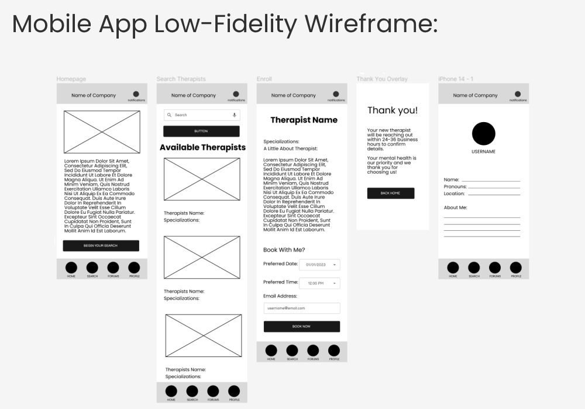
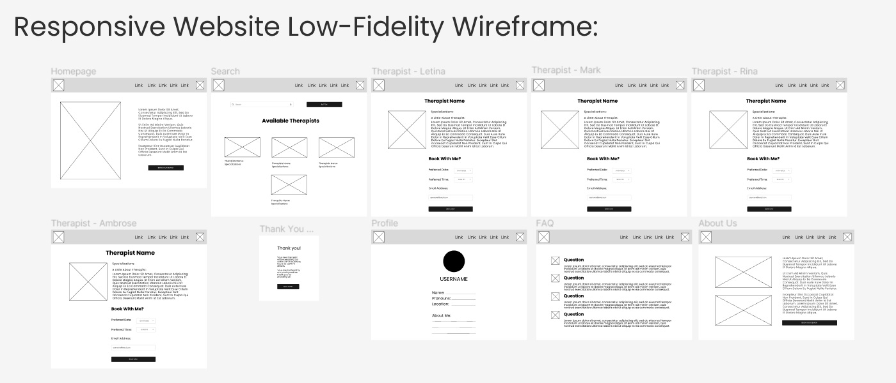
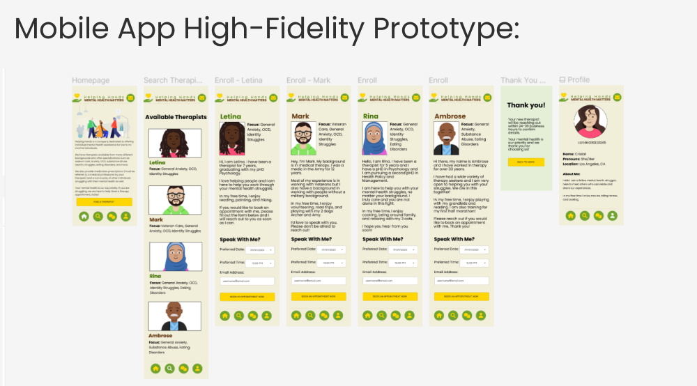
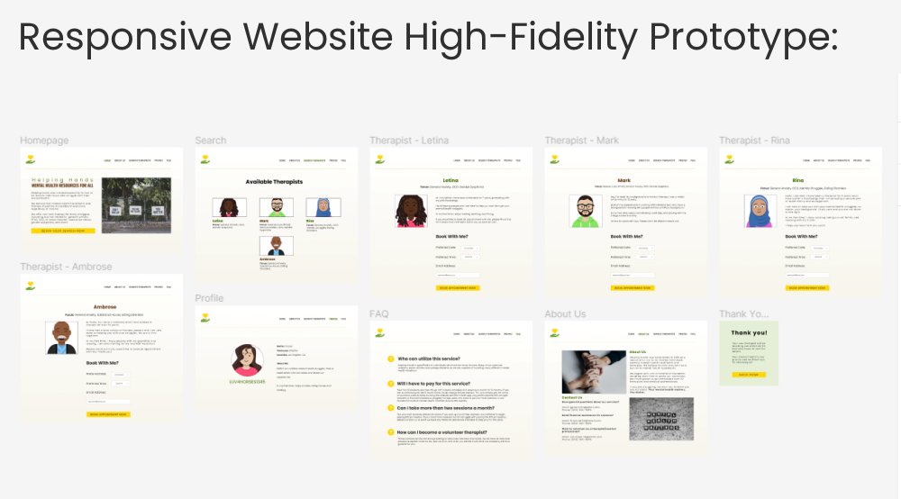

Overview:
Project Duration: May 4, 2023 - May 12, 2023
This was the third, and final, project from the Google UX Design
Professional Certificate. This project was titled "Design for Social
Good" which is defined as designing a mobile app and website to
address problems going on in our communities and to drive positive
change in society. Mental Health is a passion of mine (in multiple
aspects) so I chose to focus on creating a company that provided
mental health therapy for low to no-income individuals.
Challenge
My biggest challenge was to really push myself to design my best
work so far. Besides my personal challenge, I wanted to make
sure a mental health therapy app/website was welcoming and
calming. Seeking support for mental health can be very
overwhelming and embarassing and I wanted to design content in a
way that didn't make people feel nervous to do so.
Solution
My solution was to provide a quick and easy way to enroll in
therapy for mental health suffers. The mobile app and website
have the same pages, except I added a "FAQ" and "About Us" to
the website. I chose the colors green (for Mental Health
Awareness), gold, and brown. I wanted to create more of an
earthy feel which hopefully invoked the feelings of warmth and
serenity of being in nature.
My Role
My role, the same was before, was that I led the overall user
experience and front-end development. My responsibilities
included user research, wireframing/prototyping, testing, and
design.
Strategy:
My focus was taking my adjustments I wanted to make on my first two
projects (color issues, layout simplicity, lack of details) and
clean those up for this project.
My research involved the same assignments as before (personas,
research study plan, user journey map) and extensive redesigns of
both projects.
All of these assignments are reviewable and are located in my
Google Docs Case Study.


Goals:
My self-created goals were created, again, by referring back to my
research documents and peer reviewed assignments.
- Focus on peer reviewed/persona pain points
- Make design welcoming but not too flashy
-
Include individual therapist pages to help users feel more
comfortable about selecting a therapist
Design:
I am very proud of this project! The design is clear, concise, and
welcoming. I have a page where users can scroll through available
therapists easily and I included the topics they focus on. I also
made a design choice to remove the search bar, which was a problem
in past projects. I had great feedback from my peers about this.
They felt that by removing the search bar, users would be less
overwhelmed about what focus to type in, especially if they were
searching for more than one focus.
Another thing I had great feedback on was creating individual pages
for each therapist. I felt this would humanize the therapists by
explaining more about themselves in hopes to encourage users to
reach out and my peers agreed. I also made sure these pages were
scrollable and included booking information for easy sign-ups.
Finally, for the website I added the pages of "About Us" and a "FAQ"
for quick and common questions. I hoped these additions would give
users a piece of mind about who the company was and what service
they were considering.
To view the prototypes, please visit
my Figma page
and view the designs on an Iphone 14 device/Macbook Pro 14".


Impact:
If this were a real website, I know the impact for individuals
suffering from mental health would be great. I specifically chose to
focus on low to no-income individuals because therapy costs can be
very expensive. I firmly believe that everyone, regardless of income
status (or anything else), should have access to mental health care
any time they need it.
As far as the designs, I believe I learned a lot from my first two
projects. I kept my focus on users without even trying (growth!) and
went back to my peers numerous times to get feedback on my work.
What I Learned:
These designs turned out so much better than I hoped for. With
persistence, communication with my peers, and research into users, I
am very proud of how this project turned out.
This 7-course program taught me so much about UX fundamentals,
inclusive design, low-fidelity and high-fidelity prototypes, and
Figma. While I know I am barely scratching the surface of what User
Experience is, I am astounded at what I did learn. But my journey
doesn't end here. My curiousity, eagerness to learn, and my drive to
succeed continue to push me to greater heights and even more
knowledge.
Thank you for embarking on this design journey with me.
Quick Links:
Project 3 - Figma Designs
Project 3 - Google Docs Case Study
xo Cristal